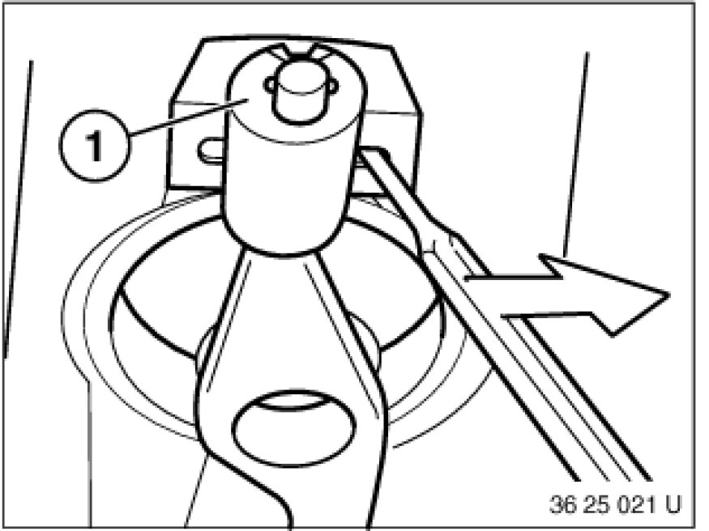
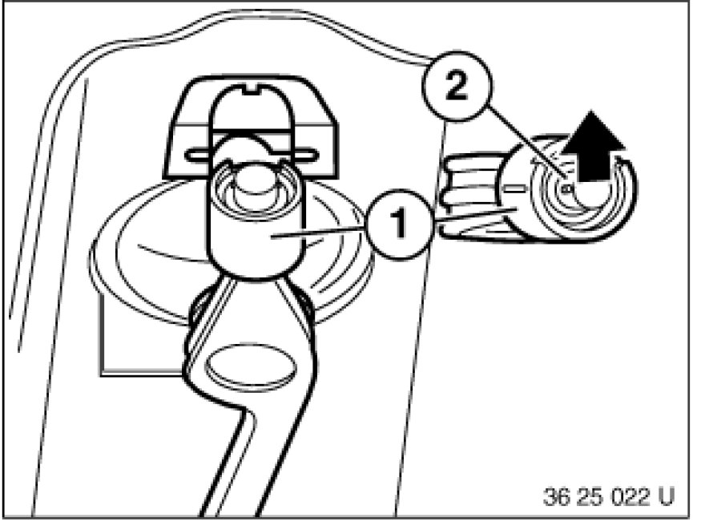

Replacing Shift Arm Support Bearing
25 11 245 - Replacing shift arm support bearing

Necessary preliminary tasks:
- Remove complete exhaust system Service and Repair.
- Remove heat shield
- Remove propeller shaft from transfer box at rear.
- Release center bearing.
- Tie propeller shaft to one side.
Tasks are described in Removing propeller shaft Removing and Installing Propeller Shaft (Cardan Universal Joint) Completely.

Lever support bearing (1) with a short screwdriver out of mounting.
Pull support off shift arm.

Installation Note:
Grease bearing pin of shift arm.
Grease, refer to BMW Service Operating Fluids.
Fit support bearing (1) with opening (2) towards top rear onto mounting.